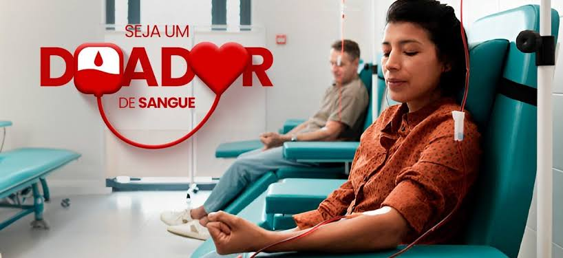
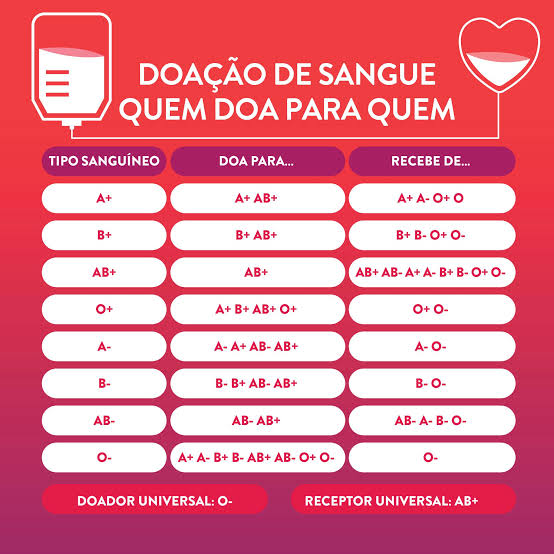
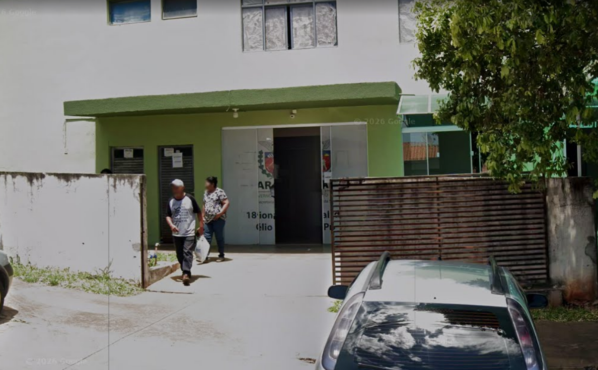

Não existe substituto artificial
Atualmente não há substitutos para o sangue humano.
Os bancos de sangue precisam de reposições diariamente para atender cirurgias, emergências e pacientes em tratamento. Seja um doador regular!
Quero ser um doador
Atualmente não há substitutos para o sangue humano.
Após a coleta, o sangue é separado em hemácias, plaquetas, plasma e crioprecipitado, permitindo ajudar até quatro pessoas diferentes.
O volume doado é reposto pelo próprio corpo em até 24 horas para o líquido e em poucas semanas para os glóbulos vermelhos.

Antes de comparecer à unidade de coleta, confira se você atende aos critérios básicos estabelecidos pelo Ministério da Saúde:
Dúvidas sobre impedimentos temporários (tatuagens, vacinas ou medicamentos)?
Consulte o guia completo da Secretaria de Saúde do Paraná (Hemepar)
As coletas na cidade são realizadas pela Unidade de Coleta e Transfusão (UCT) de Cornélio Procópio, integrada à rede Hemepar:
Endereço: Rua Justino Marquês Bonfim, nº 27 | Cornélio Procópio - PR
Horário de Coleta: Segunda a sexta-feira, das 07h30 às 10h50.
Telefone para contato: (43) 3520-3500
Entre em contato por telefone para confirmar a disponibilidade de horários e evitar filas.
